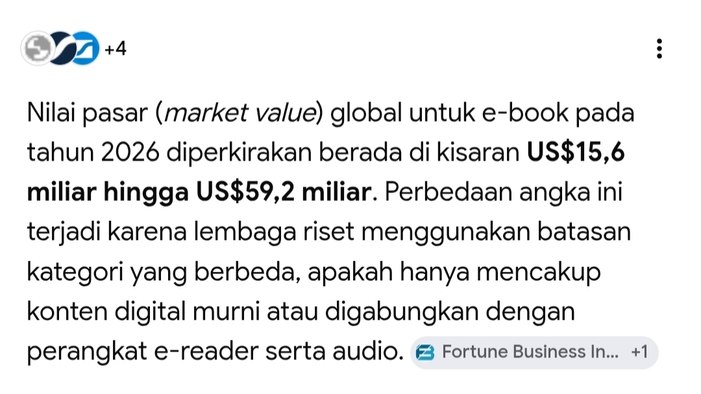
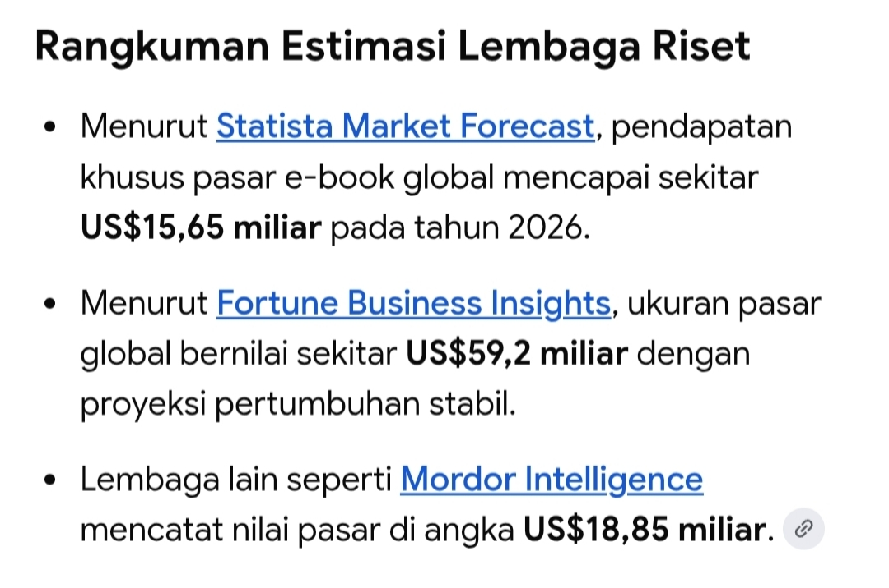
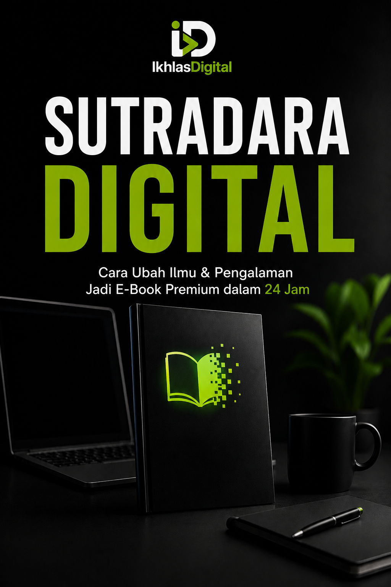

Tahukah kamu? Pada tahun 2026, nilai pasar global untuk industri e-Book diproyeksikan meroket di kisaran 15 hingga 59 Milyar US Dollar. Ini bukan sekadar angka, melainkan peluang emas yang menunjukkan bahwa tingkat keberhasilan berjualan e-Book di era digital saat ini sangatlah tinggi.


Banyak dari kita yang mundur duluan karena menganggap jualan e-Book itu susah, ribet, dan butuh bakat. Apakah kamu juga merasa begitu?
Tidak Tahu Alurnya: Kamu punya ide, tapi bingung harus mulai dari mana dan bagaimana proses eksekusinya.
Kendala Teknis & Waktu: Kamu tidak tahu cara merangkai kata yang "menjual", atau kamu terlalu sibuk dengan pekerjaan utama sehingga tidak punya waktu berjam-jam untuk mengetik.

Ini adalah panduan praktis end-to-end yang merangkum solusi atas semua kebuntuanmu dalam menciptakan produk digital. Di dalam e-Book ini, kamu akan diajak membedah rahasia dapur pembuatan e-Book premium, di antaranya:
Monetisasi Potensi Diri: Cara jitu mengidentifikasi skill, ilmu, dan pengalaman terpendammu, lalu menyulapnya menjadi e-Book premium dengan nilai jual tinggi.
Strategi Mulai dari Nol: Bagaimana jika kamu benar-benar merasa tidak punya skill atau pengalaman? Buku ini punya roadmap khusus agar kamu tetap bisa menghasilkan karya!
Riset Pasar Anti-Gagal: Cara akurat menganalisa dan membaca kebutuhan pasar untuk memastikan e-Book kamu pasti laku sebelum mulai ditulis.
Psikologi Harga (Pricing Strategy): Trik menyusun strategi harga yang tepat, agar e-Book buatanmu pantas dan wajar dihargai mahal tanpa penolakan pembeli.
Pabrik E-Book Cepat (Master Secret):
Formula rahasia memproduksi e-Book ratusan halaman yang terstruktur rapi, dan selesai murni hanya dalam 24 Jam dengan menggunakan Gemini AI.
"Awalnya saya kira bikin ebook itu butuh waktu berbulan-bulan. Pakai strategi di Sutradara Digital, di sela-sela jam istirahat kantor pun saya bisa nyicil bikin aset digital. Sangat life-saving buat pekerja sibuk!"
"Sebagai tenaga pengajar, saya punya banyak materi tapi bingung cara ngemasnya buat dijual. E-Book ini ngasih alur yang sangat terstruktur dari A sampai Z. Modul saya sekarang sukses jadi passive income!"
"Saya baru lulus SMA dan jujur belum punya pengalaman apa-apa. Sempat ragu bisa bikin e-Book, tapi panduan untuk pemula tanpa skill di buku ini beneran works dan gampang banget diikutin!"
Amankan panduan lengkap ini dan dapatkan harga spesial khusus pembelian hari ini.
(Sekali bayar, akses selamanya. Bukan langganan!)